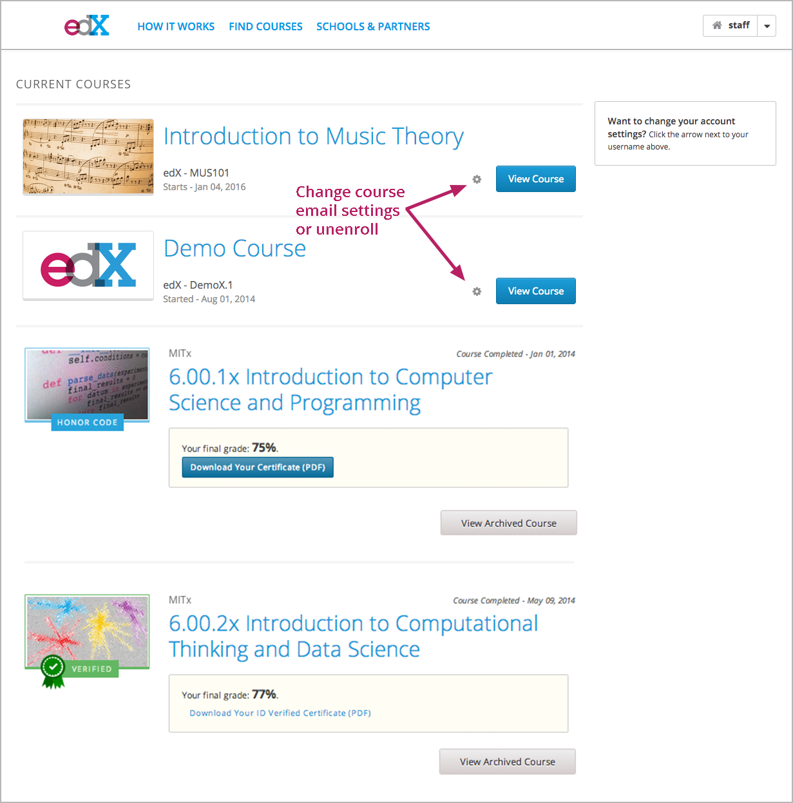
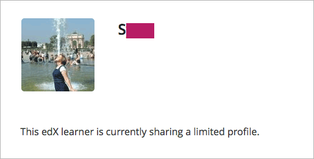
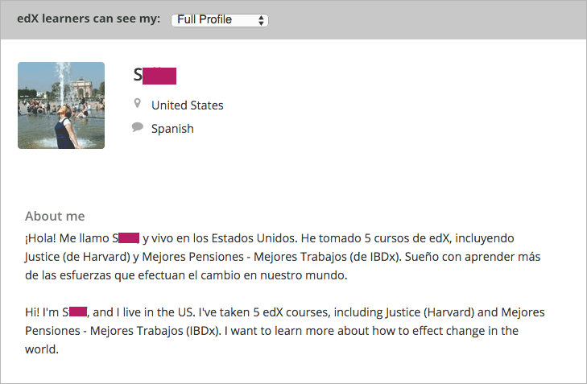
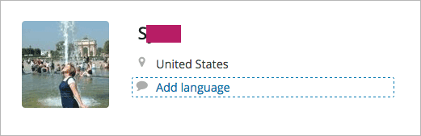
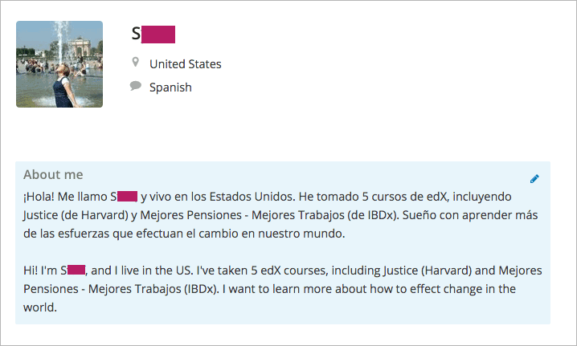

您创建一个edX账号后，您可以查看您当前的课程列表，更改您的帐户设置，或创建一个配置文件。 您可以从任何edX页面获取您的账户或个人资料信息，无论你是在一门课程中或浏览课程目录中。
选择任何edX页面的右上角您的用户名，您可以在任何时间访问您的仪表盘。 * The Account Settings 该页面允许您更改设置，比如您的电子邮件地址、教育程度以及国家或地区，并且您可以将您的edX账户链接到Facebook或谷歌账户。 若您想在任何时间查看您的账户设置，在任何edX页面的右上角选择您的用户名，然后选择 账户设置 。 * On your profile page 您可以创建一个配置文件，包括图像和传记资料。若要访问您的个人资料在任何时候，请在任何edX页面的右上角选中您的用户名，然后选择 我的个人资料 。
当您创建一个edX账户或者登陆您的edX的课程，您会自动跳转到您的仪表板。 你也可以在任何时候在任何edX页面的右上角选中您的用户名来访问您的仪表板。
您的仪表板包括关于您的课程的重要信息。您可以在您的仪表板上进行一系列操作。
访问您当前和已归档的课程。
为了访问您当前或已归档的课程，请选择 查看课程 or 查看已归档课程。需要注意的是存档的课程只可以提供有限的访问内容。
查看课程已开始还是已结束。
课程的开始日期和截止日期显示在课程的名称下方。
更改您课程的电子邮件设置。
取消注册的课程。
要取消注册，选择该课程的选项图标，选择 取消注册 ，然后选择 取消注册 的确认对话框。
查看您已完成的课程的成绩。
您最终的成绩显示在该课程的名称下方。
下载证书。
若您需要下载证书，请选择 下载您的证书（PDF） 或 下载你的ID身份认证（PDF） 。然后，您可以打印PDF证书。
当您在edX创建一个账户，一些基本信息需要您提供，包括您的电子邮件地址和姓名。 当您创建您的edX账户时，您可以提供额外的可选的信息，比如您当前的受教育程度。 课程的相关工作人员可以访问这些信息，以了解更多有关注册他们课程的学习者的资料。 这些信息也有助于帮助edX提高我们的课程的质量和数量。
基本账户信息包括以下信息。这些信息是每个edX帐户所必须的。
请参考以下步骤以查看或者更改这些信息。
edX会自动保存您的更改。
其他帐户信息是可选的，包括以下信息。
要查看或更改此信息，请按照下列步骤操作。
edX会自动保存您的更改。
您可以将您的帐户EDX链接到你的Facebook或谷歌帐户。如果您已链接您的帐户，您可以使用Facebook或谷歌账户自动登录。
链接您的账户请参考以下步骤。
在任何edX页面的右上角选择您的用户名，然后选择 账户设置 。
在 链接帐户 部分，选择 链接 到Facebook或者谷歌。
如果你想将你的edX账户取消与Facebook或谷歌帐户的链接，在 链接帐户 部分，选择 取消链接 到Facebook或者谷歌。
您的edX个人资料可以让在edX讨论区分享您的个人资料。您的edX个人资料可以包含您在edX站点的识别头像，以及您的位置和其他个人履历。课程团队和课程学习者可以在您的课程中查看您的个人资料。
您可以分享有限的或者全部个人资料。
Note
十三岁以下的学习者只能分享有限的资料。
有限的资料可以只包含您的用户名以及头像。
全部个人信息可以包含个人履历。
有限的资料仅包括你的用户名和头像（可选）。
创建或编辑有限资料，请参考以下步骤的操作。
在任何edX页面的右上角选择您的用户名，然后选择 我的资料 。
在您的个人资料页面，在页面的左上角找到 edX学习者可以看到我的信息 ，然后选择 限制个人信息 。
（可选）添加一个头像与您的edX用户名关联。 您的头像必须是一个.gif、.jpg或者.png格式的文件。大小在0.1KB到100MB之间。如果您不添加头像，则头像栏会显示您的个人资料图片。
更改或删除您的个人资料图片，请将光标移到头像，然后选择 更改图片 或 删除 。当您删除您的头像的时候，头像栏会显示您的个人资料图片。
edX会自动保存您的更改。
Note
您必须在您分享您的全部个人资料之前在账户设置页面制定您的出生年份。如果您的年龄没有超过13周岁，您只能分享有限的个人资料。
完整的个人资料可以包含以下信息。您的用户名、国家或地区是必须要求的。
参考以下步骤，创建或者编辑您的个人信息。
在任何edX页面的右上角选择您的用户名，然后选择 我的资料 。
在您的个人资料页面，在页面的左上角找到 edX学习者可以看到我的信息 ，然后选择 完整个人信息 。
在您的个人信息页面，将光标移动到要添加或者修改的信息。
如果您还没有添加任何信息，会有高亮和虚线框提示。
如果该字段已经有信息，则会有高亮显示，并且会有铅笔图标出现在其右上角。
将您的光标移动到信息框内，然后您可以输入文本或者从列表中选择不同的选项。
edX会自动保存您的更改。
Note
如果您将您的个人资料类型从 全部个人资料 更改为 有限个人资料 ，您的地址，语言，简介在您的个人资料页面上都不可见。但是，这些信息会被保存。若想让这些信息可见，请选择 全部个人资料 。
{kind=link}
{kind=link}
{kind=link}
{kind=link}
{kind=link}
{kind=link}